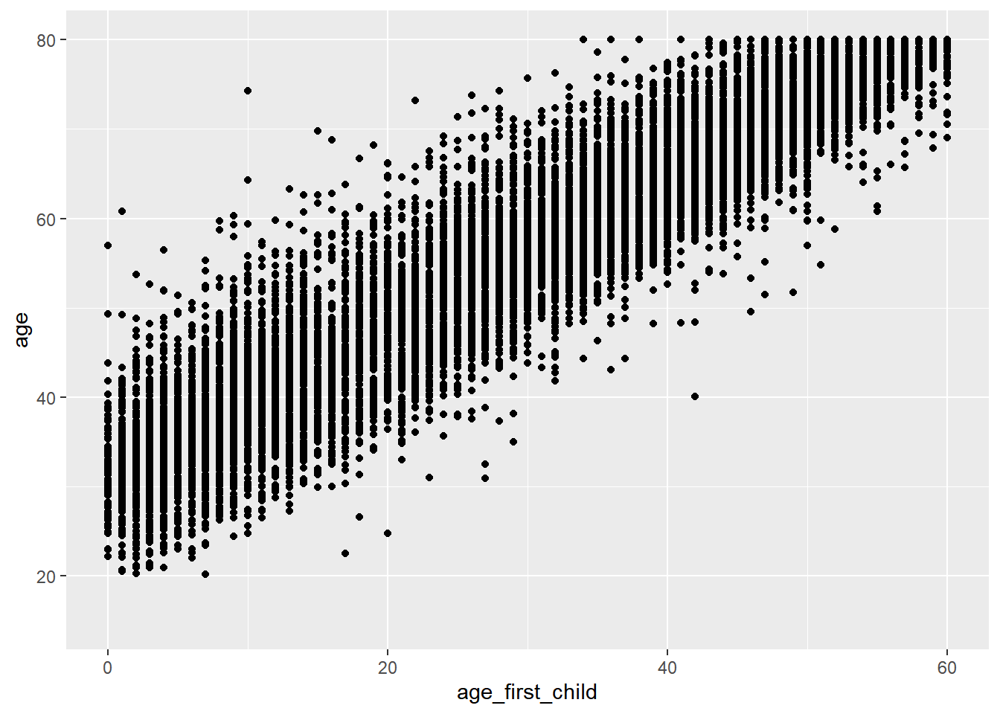

The Canadian General Social Survey (GSS) is an important survey conducted yearly in Canada as it provides valuable information that then influences policies that are made to better the lives of Canadians. Specifically, a simple linear regression model was used to determine the possible relationship between the age of a participant and the age of their first child from the 2017 GSS. We found a statistically significant relationship (p<0.001) between age of the participant and age of their first child (R^2= 0.83 ± 0.095) with a 0.83 unit increase in the age of the first child for every year older the participant is. The conclusions of this study is that population specific policies can be made knowing that the older this population is the older the age of their first child is thus childcare policies can be amended to better suit the needs of this specific population.
The Canadian General Social Survey yearly collects data on social trends to gain an understanding on the changes in how Canadians live and their well-being to influence social policies. This survey is important as the data influences many government programs that have then improved the welfare of Canadians, led to more research about their social life and is used as a teaching tool in post-secondary institutions across Canada ( Statistics (2017) ). Every year there is a specific theme that the survey focuses on. Specifically, the 2017 GSS will be analyzed and the theme was family which is repeated every 5 years.
This report aims to determine the relationship between the age of an individual and the age of their first child. This is an important analysis since understanding the trends of the age of the first children of this population can lead to a better comprehension of the population. This can also have a significant impact on the policies being made because depending on if the population has many individuals with lots of younger children then there may be need for child care policies to better help meet their needs. Specifically, the age of the first child occurring early on in someone’s life is correlated with negative health outcomes (Gibbs et al. (2015)). Therefore, through the use of a simple linear regression model we aim to gain a further understanding of the correlation between the age of an individual and the age of their first born.
The data set is from the 2017 GSS which focused on family. The data set has a large focus which can allow us to focus on a specific part of it, but is still comprehensive which can lead to many different analyses. This survey is important since it contributes significantly to policies being made which improve the lives of Canadians (Statistics (2017)). The strengths of the questionnaire is that it is fairly straight forward which can make it easy to be understood by everyone including those who don’t speak English/French as their first language. Another strength is that all the questions are relevant and will lead to a better understanding of the social trends and is specific to Canadians. Weaknesses of this questionnaire is that is long and can take 40-45 minutes which may be too long for some people which may decrease the response rate. It also asks really personal questions that some people may not feel comfortable sharing.
Furthermore, a large sample size is included making it possible to generalize the conclusions to all individuals within the provinces sampled. Key features include that 2017 was the first year where the personal income questions were removed and rather income information was received by linking the data to tax income to those that did not opt out (Statistics (2019)). This increased the accuracy of the survey as it did not rely on what an individual wanted to disclose.
The methodology used is a cross-sectional design to conduct an online questionnaire that uses the sampling frame of land line and cellphone numbers that are gathered from the Census and other administrative sources affiliated with Statistics Canada (Statistics (2019)). This allows for there to be more information as it will cover more household that have a telephone number. The population of this survey is Canadians aged 15 and over in private households in 10 provinces. The frame population is the list of Canadians that are 15+ in 10 provinces. The sample population is those that completed the online questionnaire.
This sample used a stratified sampling approach which is distributed to a group of individuals which belong to a different province/census metropolitan area (CMA)(Statistics (2019)). One randomly selected household member that is 15 or older was then selected and their survey information was collected. Stratified sampling is used to gain a better understanding of this population since it divides the population into similar group then uses random sampling technique within the strata (Changbao and Thompson (2019)). Non-responses are inputted as N/A into the survey data and the survey will only be conducted with the specific individual rather than allow another person to respond on the behalf of someone (Statistics (2019)). This survey is offered for free and it now costs less than it used to since there are no longer any in-person/on the phone interviews therefore nobody has to be paid to conduct this survey with someone (Statistics (2019)). A trade-off to this is that there is nobody there to immediately answer any questions that the participant may have and rather their answers are dependent on their comprehension skills.
A simple linear regression model is being used to estimate the relationship between the age of the participants and the age of their first child. These are two quantitative and continuous variables which is why this model is being used. There is only one independent variable here, thus the use of a simple linear regression model over a multiple linear regression model (Changbao and Thompson (2019)) .
The equation of the linear regression used in this case is:
yi= B0 + Bixi ± ei Where yi is the value of the study for the ith observation, xi is the vector of auxiliary (inputs) for the ith observation ,B0 is the population y intercept,Bi is the population state coefficient,and ei is the random error term (Changbao and Thompson (2019)).
In this report, yi is the age of the participant and xi is the age of their first child. B0, Bi and ei will be found through the simple linear regression model and will provide us with the information regarding the relationship between these variables.
This model assumes that across all values of the independent variables the size of error in the prediction doesn’t change significantly. The observations have to be independent with no relationship between the observation and statistically valid sampling methods, and the data also needs to follow a normal distribution. There also needs to be a linear relationship between the independent and dependent variable. A simple linear regression model is used in this case since the age of the participants and first child age are independent variables that have a linear relationship therefore this model allows us to see if there is a strong relationship between both of these values.
Relationship between Age of Participant and Age of the first child
mydata%>%
ggplot(aes(x=age_first_child,y=age))+
geom_point()
## Warning: Removed 6835 rows containing missing values (geom_point). Figure 1 This is a scatter plot graph depicting the linear relationship between the age of the participant
Model results
library(survey)
## Loading required package: grid
## Loading required package: Matrix
##
## Attaching package: 'Matrix'
## The following objects are masked from 'package:tidyr':
##
## expand, pack, unpack
## Loading required package: survival
##
## Attaching package: 'survey'
## The following object is masked from 'package:graphics':
##
## dotchart
library(broom)
N=36193468
n=20602
fpc.srs= rep(N,n)
age.design <- svydesign(id=~1, data=mydata, fpc=fpc.srs)
mysvylm <- svyglm(age ~ age_first_child, age.design)
summary(mysvylm)
##
## Call:
## svyglm(formula = age ~ age_first_child, design = age.design)
##
## Survey design:
## svydesign(id = ~1, data = mydata, fpc = fpc.srs)
##
## Coefficients:
## Estimate Std. Error t value Pr(>|t|)
## (Intercept) 31.614649 0.095262 331.9 <2e-16 ***
## age_first_child 0.828422 0.002343 353.6 <2e-16 ***
## ---
## Signif. codes: 0 '***' 0.001 '**' 0.01 '*' 0.05 '.' 0.1 ' ' 1
##
## (Dispersion parameter for gaussian family taken to be 25.88)
##
## Number of Fisher Scoring iterations: 2
data<- tidy(mysvylm)
knitr::kable(data, align = "lccrr")| term | estimate | std.error | statistic | p.value |
|---|---|---|---|---|
| (Intercept) | 31.6146488 | 0.0952618 | 331.8713 | 0 |
| age_first_child | 0.8284217 | 0.0023431 | 353.5621 | 0 |
Figure 2 This shows the summary statistics of the simple linear regression model.The p value is really small as it’s <2e-16 and therefore is shown as 0 in the table.
The scatter plot shows there is a linear relationship between the age of the participants and the age of the first child. This signifies that the simple linear regression model is the correct model to show the relationship between these variables. This survey model utilizes the quarter 1 population data in 2017 provided by the Canadian Census data as the survey is released in the first quarter excluding the territories (Statistics (2020)).
A null hypothesis signifies that there is no relationship between two variables. As there is a really small p value which is less than 0.05 this proves that the null hypothesis is false (Andrade (2019)). Further proof, is shown through the t value (statistic) being quite large as it’s in the 300’s (Changbao and Thompson (2019)). Together this demonstrates that there is a statistically significant relationship between the age of the participate and the age of their first child.
The equation from the simple linear regression model is:
Age= 31.6 + 0.83*age of first child ± 0.095We found a significant relationship (p<0.001) between age of the participant and age of the first child (R^2= 0.83 ± 0.095) with a 0.83 unit increase in the age of the first child for every year older the participant is. Therefore, this shows the older a participant is the older their first child is proving the hypothesis of this study.
A caveat of this model is that it can not be used to predict values that are outside of the range (Schneider, Hommel, and Blettner (2010)). Therefore, this conclusion can only be applied to individuals within these provinces between the age of 15-80. Signifying that in another population with every unit increase of age, there may be a decrease in the age of their first child. This would imply that the age of the participants are older and they have younger children. As some participant’s did not have children their data was excluded from the analysis.
Therefore, by understanding in this specific population, that as age increases the age of their first child also increases this can have a significant impact on the policies made for Canadians. These results also have larger implications as there are studies that have shown that there are significant health complications in young moms (15-19) giving birth (Gibbs et al. (2015)). This is mainly something seen in developing countries and not Canada, nonetheless surveys such as these that are probing what is occurring within provinces allow us to ensure that there are the necessary policies to help individuals that may be dealing with these issues. Basing policies solely on what is expected to happen within a country will not effectively meet the needs of the specific population as every population is slightly different. Therefore, this shows that this population is following the expected trend for developed countries (Gibbs et al. (2015)).
A weakness of the study is that the question “What is the age of your last child” was not asked and therefore this provides an incomplete picture of the age of the participants and the relationship to the age of the children. However, conclusions can still be made towards reproductive age and child birth trends by just knowing the age of the participant’s first child. Rather ,more conclusions can be made by having the knowledge of the age of the last born child.
This study is not analyzing specifically maternal age as all participants regardless of gender were asked about the age of their first born thus the results can not directly translate to the trends of maternal age, but rather about family trends generally. Therefore, to specifically look at gender and age of first born this data could be further stratified into gender rather than just being stratified on location.
Next steps, can be to add a question to the Canadian General Social Survey on the age of their last child in order to have a full understanding of the relationship between the age of the their children. This will add to the conclusions of this study leading to a more well rounded conclusion. Through this it can allow a more holistic view to Canadian’s child trends and a better understanding of familial trends. Ultimately, contributing to a more comprehensive understanding of families. Especially since by understanding how families are built this can lead to a more comprehensive understanding fo the general population.
Also, including the 3 territories so can allow us to generalize our conclusions to all of Canada since the sampled population is quite large. Especially as stratified sampling is being used which will allow us to group the different populations based on their city within the province to ultimately gain information on all Canadians social trends.Therefore, this can allow policies that will help make all Canadians receive equal treatments as territories can face different issues at a different scale such as the opioid crisis disproportionately effecting certain territories than provinces (Belzak and Halverson (2018)). This can also allow a comparison between those who live in the territories and provinces by comparing the results to previous years or looking at the data provided from the territories to the provinces.
Andrade, Chittaranjan. 2019. “The P Value and Statistical Significance: Misunderstandings, Explanations.” Indian Journal of Psychological Medicine 41 (3): 5. https://doi.org/10.4103/IJPSYM.IJPSYM_193_19.
Belzak, Lisa, and Jessica Halverson. 2018. “The Opioid Crisis in Canada: A National Perspective.” Health Promot Chronic Dis Prev Can 38 (6): 9. https://doi.org/10.24095/hpcdp.38.6.02.
Changbao, Wu, and Mary E. Thompson. 2019. “Basic Concepts in Survey Sampling,” 10.
Gibbs, Cassandra M., Amanda Wendt, Stacey Peters, and Carol J. Hogue. 2015. “The Impact of Early Age at First Childbirth on Maternal and Infant Health.” Paediatr Perinat Epidemiol 25 (1): 15. https://doi.org/10.1111/j.1365-3016.2012.01290.x.
Schneider, Ariel, Gerhard Hommel, and Maria Blettner. 2010. “Linear Regression Analysis.” Dtsch Arztebl Int 44 (0): 6. https://doi.org/10.3238/arztebl.2010.0776.
Statistics, Canada. 2017. “The General Social Survey: An Overview.”
———. 2019. “The General Social Survey - Family (Gss).”
———. 2020. “Population Estimates Quarterly.”